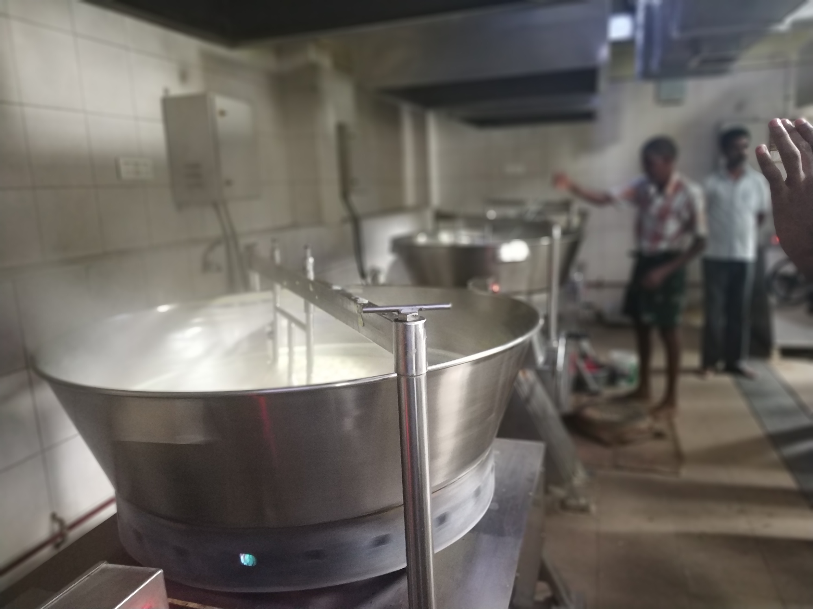
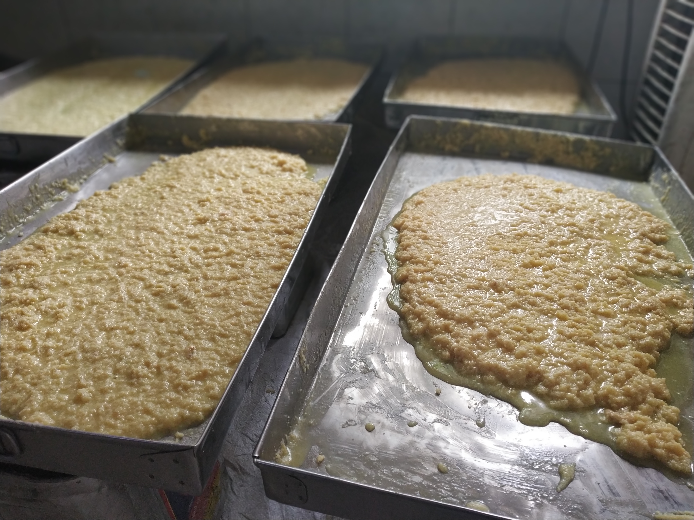

Day four started with us getting our very own TechTop T-shirts as we prepared to go for another field trip.
Our first stop was Arumugam Spinning Mill, and that was an experience in itself. I learned quite a lot about how the cotton industry works, the mill mainly produces cotton used in safety and first aid kits, and then the second grade quality, waste cotton is used to make bedsheets, pillow covers and the like.
The plant focuses on processing cotton (sourced from all over india; from states including Karnataka, Gujarat, Rajasthan, Andhra Pradesh and Telangana); we learned about the ginning process, which is how the cotton is separated into fibers and separated from its seeds. About 90% of the mill is automated with huge machines, for almost every process except the initial and final quality checks and a few other human-intensive work.
The cotton is stuffed and compressed into cubes for storage, and the plant processes more than 10,000 kilograms of cotton per day, and according to the security official at the warehouse, they store more than 100 tonnes of cotton at a time so that even during the seasons where cotton isn’t produced, they have enough supply to process.
After the warehouse, we went to go see the machines, and that was really cool, there were cotton being threaded and weaved into small threads, and there were upto 27,000 spindles being made at any give moment. The machines themselves were really fascinating and remarkable feats of engineering. There’s all sorts of systems in place to reduce wastage of cotton as much as possible and increase efficiency Most machines were locally made, by Lakshmi Machine works, and two other machines, one sourced from Italy (I forgot the name) and another german made machine, which I took particular interest in because the nameplate on it said ‘Manufactured in West Germany’, which means that the machine was manufactured before 1989 (the fall of the Berlin Wall), I tried to source the name of the company to see if it still exists, but I was unable to find anything, so that probably means the company either got bought out or disappeared under the tides of history.
When we got to see the machines, I got a small fibre of cotton stuck in my eye and it was stuck there and hurt me and hindered me for the rest of the day, which prompted me to think about the conditions the workers in the spinning mill must be facing. We saw many workers inside who didn’t wear safety equipment or masks citing reasons such as ‘it’s too uncomfortable’ or ‘it gets in the way of my work’, and we realized that could potentially be a huge problem, with further evidence proving that some of the older workers, specifically an old man I interviewed who’s worked there for over 16 years, having breathing difficulties because of his line of work.
We originally intended to go to the Sivakasi Fireworks Factory and see around, but then the circumstances did not allow us, there was a workers strike that very day which prompted our organizers to reschedule it, and after the spinning mill, we went to a ‘Paalkova’ manufacturing plant.

‘Paalkova’ is a sweet similar to the North Indian ‘Milk Peda’, except it’s much more simpler in nature, it’s made of only Milk and Sugar. Srivilliputhur in Tamil Nadu is famous for Paalkova. We went to a small plant, located at the back of a confectionery shop called Sree Venkateswara Vihar, and the Paalkova was branded with this name ‘Sree Venkateswara’.
Paalkova here is made by heating (to about 80-90°C) and stirring milk and simmering, for about 1.5 to 2 hours, while continuously stirring (which is done using a specialized rotating tub), while a worker occasionally uses a large spoon/spatula to aid the automated stirring or making sure none of the solidified paalkova gets stuck anywhere. After the simmer, the paalkova is left to cool, after being taken out and separated into trays and once it settles, everything is handpacked, branded and sent to the bakery. We got free samples, which everyone voluntarily went and received, the paalkova, unlike the general milk peda found everywhere has a different texture, and the ones we had were slightly rough in texture, and slightly sticky. I found it cool that the alchemy of milk and sugar makes such a fine sweet, the signature of the entire town of Srivilliputhur.

There weren’t many problems to be addressed here besides the fact that the workers had no safety or hygiene equipment here either and there were the presence of a few occasional flies near the place they kept the paalkova to settle.
After we came back to the lab, and once the session after dinner started, we spent a good few hours discussing problems and possible solutions with the farm we visited the day before. Raj prompted us to think of the most far fetched and craziest solutions we could think of. One of the problems addressed was that the registrar had said that they planted papaya seedlings outside the main farm compound but rabbits had eaten all of it before they even got to grow, so we had hilarious solutions ranging from Landmines to protect against rabbit invasions to me personally suggesting for a way to make sentient papaya plants, and the crazy solutions gave us a good mental exercise to push through our mental barriers.
Me and my teammate, Anand (yes, we share the same first name) had another solution, to address, which was to market the A2 Milk that Gautam, the farm’s owner was selling, and not just in the way of marketing, but branding it. I created a whole basic and generic branding material and mockups to prove my point as to why my plan would help gautam’s business grow exponentially.
Since the session was after dinner, we didn’t have everyone attend, so we adjourned for the day so that the people who didn’t attend weren’t missing out on much.